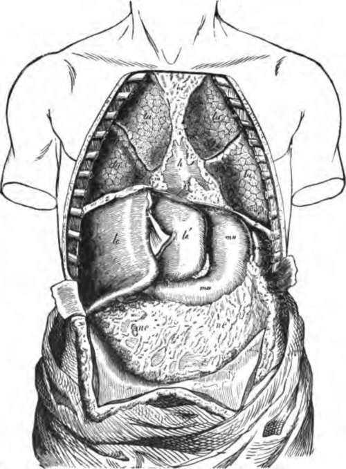

Man's Place Among Vertebrates
Description
This section is from the book "The Human Body: An Elementary Text-Book Of Anatomy, Physiology, And Hygiene", by H. Newell Martin. Also available from Amazon: The Human Body.
Man's Place Among Vertebrates
It must be clear to every one that although man's structural plan in its broad features, simply indicates that he is a vertebrate animal, yet he is much more like some vertebrates than others. The hair covering more or less of his body, and the organs which produce milk for the nourishment of the infant by its mother, are absent entirely in fishes, reptiles, and birds, but are possessed by ordinary four-footed beasts and by whales, bats, and monkeys. The organs which form milk are the mammary glands, and all kinds of animals whose females possess them are known as Mammalia *: man is, therefore, a Mammal. In internal structure one of the most important characters of the Mammalia is the presence of a cross-partition, called the midriff or diaphragm, which separates the haemal cavity into an anterior and a posterior division. This partition is shown at d in , where it is seen to divide the ventral cavity into an upper and a lower story; the upper or anterior is the chest or thorax cavity; the lower or posterior, the abdominal cavity, The chest contains the heart, lungs, and most of the gullet; the abdomen contains the lower.
In what external characters does the human body differ from that of fishes, reptiles, and birds? Name some animals which agree with mankind in the possession of these characters? What are the mammary glands? What is meant by Mammalia? To what division of vertebrate animals does man belong?
Point out a fact in internal structure in which the Mammalia differ from other vertebrates? Where does the diaphragm lie? What is the name of the cavity above it? What is the name of the cavity below it? Name some organs lying in the thorax. Some placed in the abdomen. Some which run through both.
* Zoologists classify vertebrate animals in five groups. 1. Pieces, including all true fishes, as sharks, eels, salmons, shad, perch, etc., but excluding the so-called shellfish, as oysters, clams, and lobsters, which are not vertebrates at all. 2. Amphibia, frogs, toads, newts, salamanders etc 8. Reptilia, lizards, alligators, tartles, snakes. 4. Aves, birds, 5. Mammalia, end of the gullet (which pierces the diaphragm), the stomach, the intestine, the kidneys, and most of the organs making digestive liquids. The sympathetic nerve centers run through both abdomen and chest, and extend beyond the latter into the neck.
Fig. 4. The body opened from the front to show the contents of its ventral cavity, lu, lungs; a, heart, partly covered by other things; le, le', right and left liver lobes respectively; ma, stomach; ne, the great omentum, a membrane containing fat which hangs down from the posterior border of the stomach and covers the intestines; mi, spleen; zz, diaphragm.
The ventral cavity, opened from the front, but with its contents undisturbed, is shown in figure 4. Wo there see the edge of the diaphragm, z, z; above this, in the chest, the lungs, lu, lu, and the heart, h ; the latter partly covered by other things. Below the diaphragm is the abdominal cavity, containing in its upper part the liver, le, le'; the stomach, ma ; and the spleen, mi; hanging down like an apron from the lower border of the stomach is the omentum, ne, ne, which lies over and conceals the intestines.
Summary
Man is a vertebrate animal, because his body presents dorsal and ventral cavities separated from one another by a hard partition ; the dorsal cavity contains the brain and spinal cord, and reaches into the head; the ventral cavity stops at the bottom of the neck and contains the main organs of circulation, respiration, and digestion.
Man belongs to that subdivision of vertebrates known as Mammalia (1) because more or less of his surface is covered by hair ; (2) because of the presence of mammary glands; (3) because the ventral cavity is completely separated by the diaphragm into thorax and abdomen.
That man is intellectually incomparably superior to any other animal, and stands supreme in the world, can be doubted by no one; still greater is his supremacy when we consider his power of forming conceptions of right and wrong, and his knowledge of moral responsibility. But anatomists have only to deal with man's body as a material object, and as such they classify it among other animal bodies according to the greater or less resemblances or differences which are found between it and them.*
Name the parts seen when the front wall of a man's trunk is cut away. Describe the relative positions of these parts.
On what anatomical grounds do we call man a vertebrate animal? What lies in the dorsal or neural cavity? How far does the upper end of this cavity reach? What organs lie in the ventral cavity? Where does its upper limit lie? Why is man a Mammal? In what is man superior to any other animal? From what point of view have anatomists to regard man's body? What sort of facts do they take into account in assigning man's position among animals?
* It will be found very useful to accompany the teaching of this chapter with a demonstration on the body of a dead rat, kitten, or puppy. On opening the body the chest and abdominal cavities will be readily shown, and also the main organs in them. Then, on opening the skull, the brain will be seen, and on cutting across the spinal column with strong scissors, the slender soft spinal cord lying in its tube will come into view.
Continue to:
- prev: Contents Of The Two Chief Cavities Of The Body
- Table of Contents
- next: Chapter II. The Microscopical And Chemical Composition Of The Body